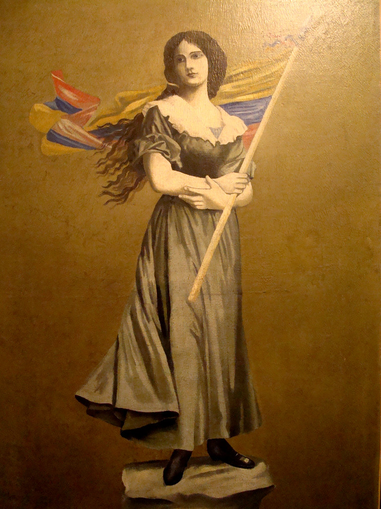
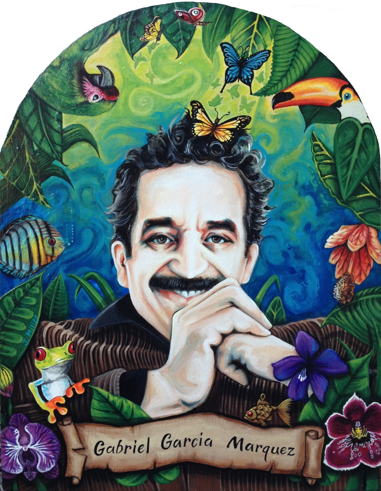
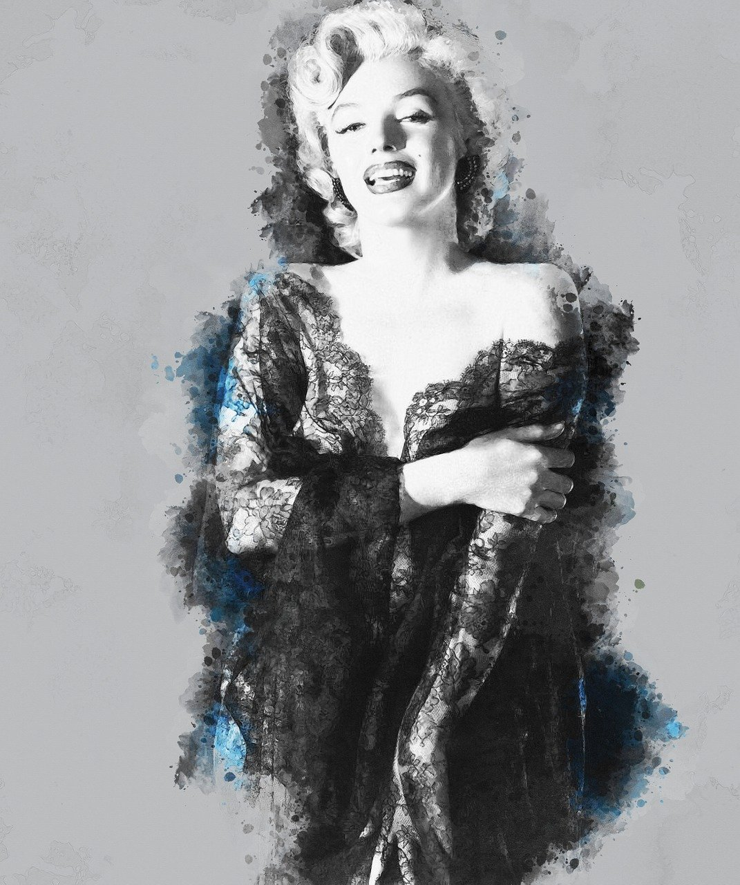
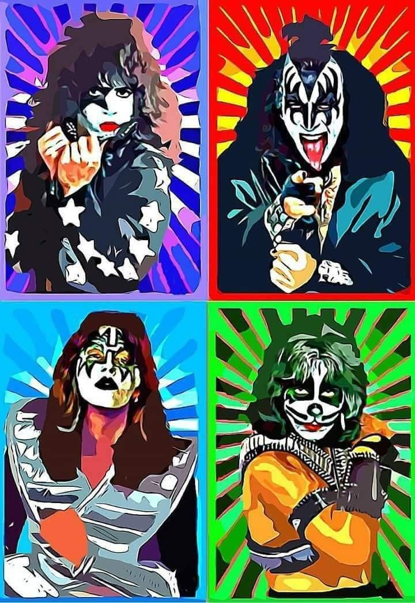
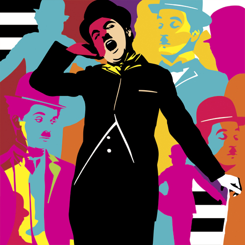

Figuras Que Han Roto Tabús
Aquí encontrarás algunas figuras famosas que han roto tabúes a lo largo de la historia,
recuerda que para saber cual fué, debes presionar la imagen.
Jessica Rabbit ¿Quién engañó a Roger Rabbit? (1988)
Tabú de la sexualidad femenina abierta Jessica Rabbit es una representación hipersexualizada: labios rojos, curvas exageradas, vestido sensual, voz seductora. En muchas culturas, una mujer que expresa o encarna el deseo sexual de forma abierta es juzgada o censurada. Jessica desafía eso. Rompe el tabú al mostrarse cómoda con su sexualidad, sin vergüenza ni culpa. “No soy mala… solo me dibujaron así.” — Jessica Rabbit Esa frase es clave: señala cómo la sociedad moldea a las mujeres según lo que espera de ellas, y luego las culpa por encajar en ese molde.
Frida Kahlo
Sexualidad libre y no convencional Frida fue abiertamente bisexual, en una época (décadas de 1930-1950) donde eso era fuertemente censurado. Tuvo relaciones con hombres y mujeres y no ocultó sus deseos ni su independencia sexual. Tabú desafiado: La sexualidad femenina, especialmente fuera de la heterosexualidad obligatoria, era silenciada. Frida la vivió y la representó.
Freddy Mercury La visibilización del VIH/sida Mercury falleció a causa de complicaciones relacionadas con el VIH/sida, un tema altamente tabú y estigmatizado en los años 80 y 90. Su muerte ayudó a generar mayor conciencia pública y a empezar a romper el silencio y la discriminación sobre esta enfermedad. Tabú roto: El silencio y el estigma en torno al VIH/sida y la salud sexual.

La Pola
Tabú del rol femenino en la política y la guerra En el siglo XIX, las mujeres eran vistas como figuras pasivas, relegadas al hogar, sin participación activa en lo político o militar. Sin embargo: La Pola fue espía, rebelde y activista durante la lucha por la independencia de Colombia. No solo se involucró: tomó decisiones, organizó redes, y asumió riesgos que se consideraban inaceptables para una mujer. Tabú roto: Que una mujer participara activamente en la guerra o cuestionara la autoridad masculina y colonial.

Gabriel Garcia Marquez
Tabú de la violencia social y familiar Denunció la violencia patriarcal, el machismo y la presión del "honor familiar" como causas de tragedias, como en "Crónica de una muerte anunciada". No temía retratar el abuso, el silencio cómplice de los pueblos o la brutalidad aceptada como parte de la tradición. Tabú desafiado: Hablar del machismo como causa de muerte o de injusticia social dentro de comunidades pequeñas y tradicionales.

Marilyn Monroe
Salud mental y sufrimiento emocional Marilyn sufría de ansiedad, depresión, inseguridad emocional y adicciones, temas que estaban totalmente prohibidos de hablar en público en ese momento, especialmente en una mujer famosa. Aunque en su tiempo no fue visibilizado, hoy entendemos que: Luchó con su infancia traumática (orfandad, abuso, abandono). Vivió presiones extremas por su imagen. Su salud mental se deterioró sin recibir el apoyo adecuado. Tabú desafiado: La fragilidad emocional en figuras públicas, especialmente en mujeres idealizadas. Ella era símbolo de perfección por fuera, pero estaba rota por dentro.
Michael Jackson
Tabú sobre la transformación del cuerpo y la identidad Michael cambió drásticamente su apariencia a lo largo de su vida: color de piel, estructura facial, estilo. Esto generó controversia y abrió debates sobre autoimagen, aceptación racial, cirugía estética y salud mental. Tabú desafiado: La idea de que el cuerpo no debe modificarse o que cambiar la apariencia es una traición a la identidad propia.

Kiss
11. Tabú del sexo y el desenfreno Las letras de KISS hablan abiertamente de sexualidad, deseo y provocación, muchas veces desde un enfoque crudo y explícito. En sus shows, usaban movimientos, poses y actitudes que rompían con la moral conservadora. Tabú desafiado: Expresar abiertamente el deseo sexual desde el escenario, sin disculpas.

Charlie Chaplin
Tabú sobre la crítica al poder y al capitalismo Chaplin se atrevió a criticar abiertamente al sistema capitalista, la desigualdad, la explotación laboral y la mecanización del ser humano. El trabajo como opresión era un tema tabú en el cine comercial. Chaplin lo convirtió en comedia y protesta al mismo tiempo. Película clave: El gran dictador (1940) Se burló de Hitler antes de que EE.UU. entrara a la guerra. Rompió el tabú de no intervenir ni satirizar la política internacional.